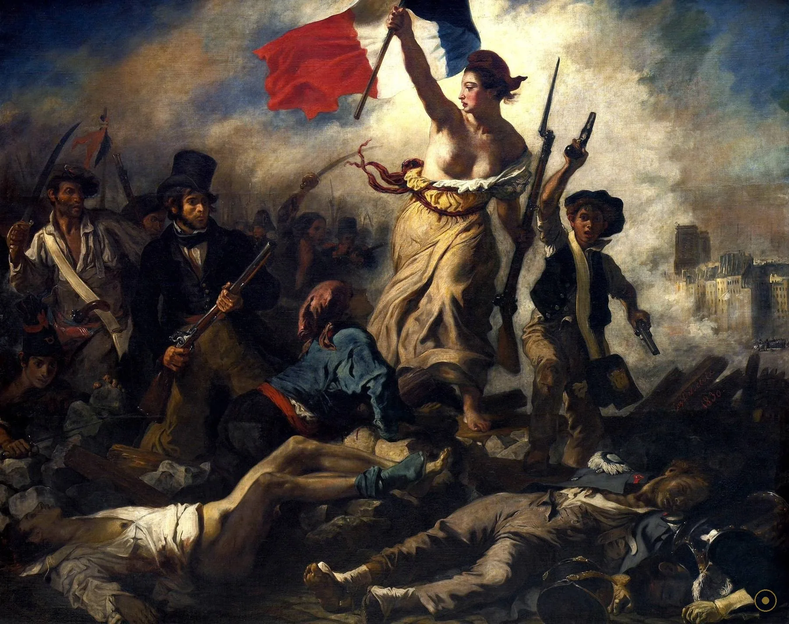
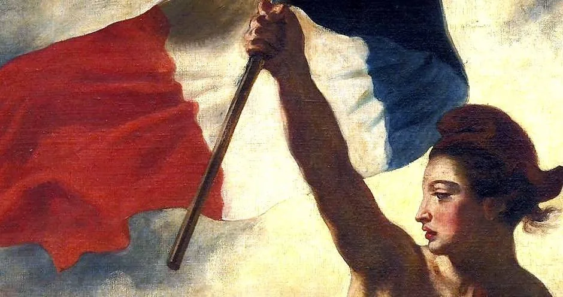
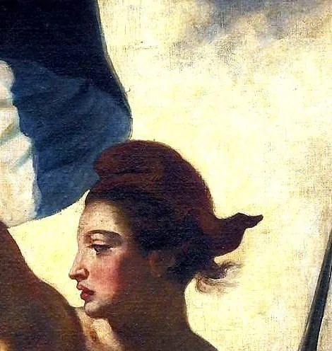
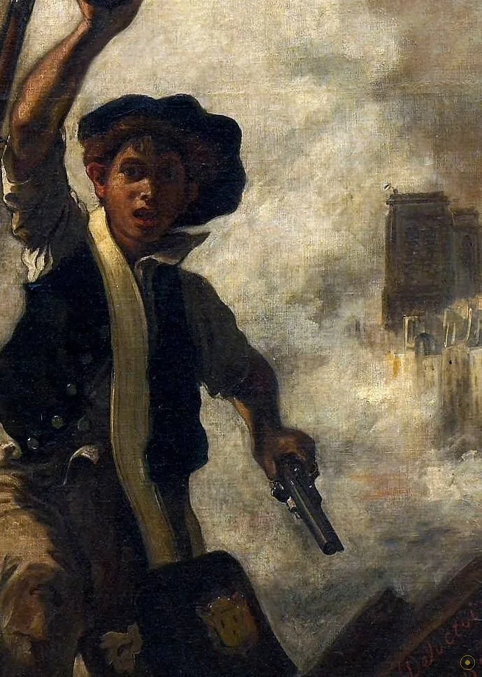
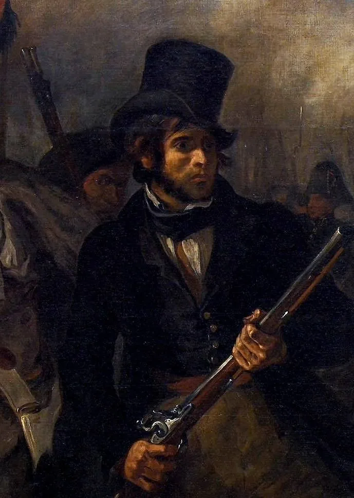
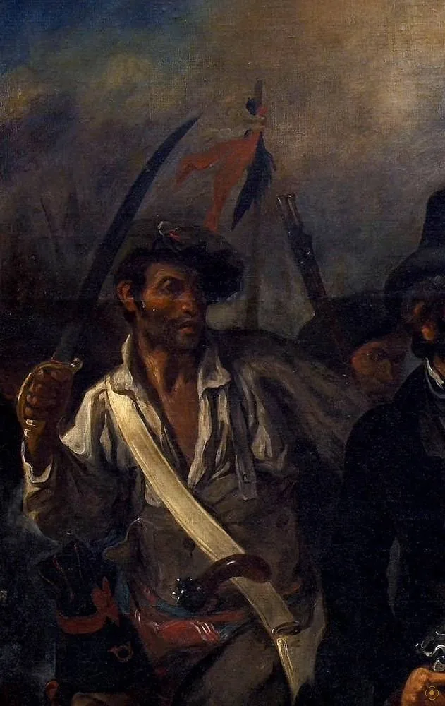
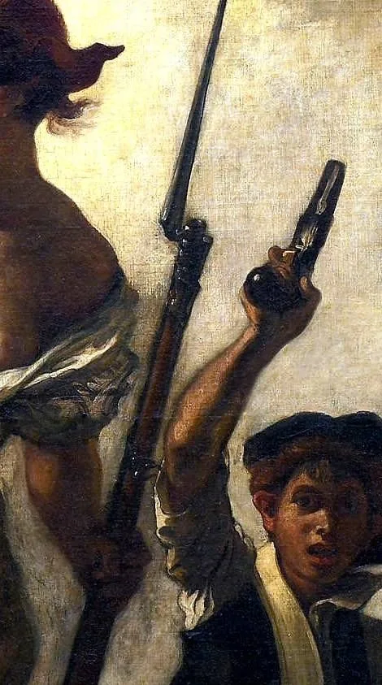
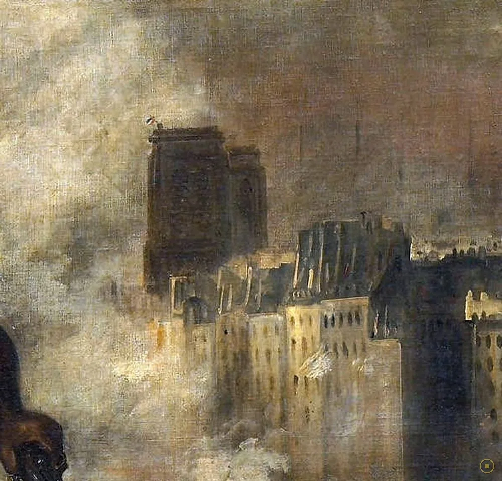
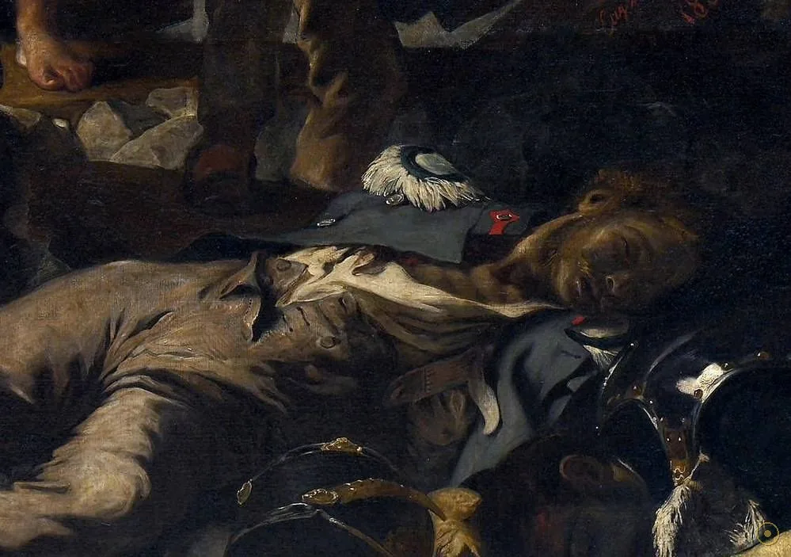

本页面展示的画作包含 艺术人体 / 裸体 内容。所录作品均为美术馆级公有领域馆藏，仅作艺术欣赏与学习之用，不含任何低俗或违规意图。
若您未满 18 周岁，或对此类内容感到不适，请点击「返回画廊」。点击「进入欣赏」即表示您已知悉上述说明，并同意仅作艺术欣赏之用。
「如果我没能为祖国打胜仗，至少我可以为她作画。」
1830 年 7 月 27 日到 29 日——后来被叫作「光荣三日」（Les Trois Glorieuses）。查理十世一纸敕令解散议会、钳制出版，巴黎人用街垒作答：石板、翻倒的马车、桌椅，把整座城切成战场。三天之后，波旁王朝的复辟结束了。德拉克洛瓦当时三十二岁，并不在街垒上——他隔着画室的窗，听见枪声在市中心此起彼伏。
10 月 28 日，他给参加国民自卫军的兄长写信，留下那句话：「如果我没能为祖国打胜仗，至少我可以为她作画。」秋天到冬天，他几乎足不出户地画这张大画；次年 5 月，它出现在沙龙（Salon）展墙上。
但真正让评论界站不住的，是画面本身的「不体面」：学院派的历史画里，寓言人物应该是圆润的大理石神像。德拉克洛瓦偏偏把自由画成一个晒黑的、赤着脚的、可能刚从街垒上下来的女人——腰间黄裙散开，手里一半是旗、一半是枪。神话被拉回了人间，人被抬进了神话。
—— 欧仁·德拉克洛瓦 · 1830 年 10 月致兄长书（据书信通译节录）
在德拉克洛瓦之前，革命画里的自由是飘在半空的神。这一次，她跨过的是尸体和石块。
一位女神、三个阶层、两具尸体、一座圣母院——德拉克洛瓦把一整场七月革命，压进了一张 260 × 325 cm 的画布。

点击画面中的 ✦ 光点 查看画面细节 · 图片来源：Wikimedia Commons（公有领域）
创作只用了一个秋天和一个冬天；但画被「收起来」的时间，是创作时间的二十多倍。
1830.7.27–29 · 巴黎
光荣三日，德拉克洛瓦没有上街垒。他在给兄长的信里写下的那句话，把他和这场革命的关系说得再清楚不过：他是旁观者，也是立刻想为它做点什么的人。同时代的浪漫主义圈子——雨果、柏辽兹——都在这场革命里找到了各自的「七月」：雨果后来写《悲惨世界》，柏辽兹则在 1830 年为《马赛曲》配了管弦乐总谱。
➤1830 秋 – 12 月 · 画室
按书信与沙龙记录，这幅 260 × 325 cm 的大画在 1830 年秋冬完成，次年 5 月进入沙龙展。画法上是典型的德拉克洛瓦：厚涂、颤动的笔触、大面积的补色对撞——黄裙对蓝灰的天空，红帽对青绿的烟。他终生敬佩鲁本斯与英国的康斯太勃尔，这张画的色彩密度，正是他从两人那里各偷了一半。
➤1831 – 1874 · 从雪藏到卢浮宫
1831 年沙龙展出后，法国政府以 3000 法郎买下此画——却因题材过于「煽动」，迟迟没有公开展出。此后二十多年它几乎不见天日，只在 1848 年革命和 1855 年世博会短暂露面；直到 1874 年才正式进入卢浮宫。一幅为国家买的画，用了四分之一个世纪才被允许面对公众。

真事一 · 那句话写在给哥哥的信里。1830 年 10 月 28 日，德拉克洛瓦写信给在国民自卫军服役的兄长费迪南：「如果我没能为祖国打胜仗，至少我可以为她作画。」这封私人信件后来成了这幅画最常被引用的注脚——画家自己知道，他做的是同一件事的另一种形式。
真事二 · 国家买下它，又把它收了起来。1831 年政府购画后，它原本计划被安置在卢森堡宫，因题材敏感被退回；此后二十余年几无公开展出，直到 1848、1855 年短暂露面，1874 年入藏卢浮宫。今天它是卢浮宫德农馆最拥挤的一面墙。
真事三 · 它被写过字，也重新亮过一次。2013 年 2 月，此画在卢浮宫朗斯分馆被一名访客用记号笔写上字迹，修复师在两小时内清除、未伤原作；2024 年，卢浮宫完成多年来的大规模修复——老化泛黄的清漆移除之后，那面三色旗重新亮得像 1830 年的那个上午。
※ 购藏、雪藏与修复经过依据卢浮宫及法国媒体公开报道；致兄长书据法文书信通译节录。
高礼帽、马刀与双枪站成一排——德拉克洛瓦把七月革命的全部参加者，画进了同一支队伍。
被复辟王朝禁了十五年的旗，在这幅画里重新张开——半年后它成为法国国旗，直到今天。

获释奴隶的帽子，晒黑的侧脸——自由第一次被画成一个可能真的存在过的人。

街垒上真实的巴黎孩子，三十年后变成雨果笔下那个笑着死去的小英雄。

有产者、学生，也可能是画家自己——争论从未停过，队伍却从未散过。

七月革命阵亡名单上最多的是他们；画面最左边，是他扬起的第一道刀光。

一手旗、一手枪——德拉克洛瓦拒绝把自由画成只会挥杖的神像。

塔尖上的小三色旗与中央遥遥相对：这不是古代战场，这就是巴黎。

倒下的国民自卫军士兵——让这幅画跳出宣传画，走进悲剧的那一笔。
1830 年的法国学院派仍要求历史画端庄：构图要金字塔、人物要理想化、当代题材只配画成风俗小品。德拉克洛瓦偏偏把「上个星期的巷战」画成了祭坛画的规格，还让寓言女神光着脚踩进瓦砾。波德莱尔后来称他为现代绘画最原创的画家之一——这张画正是那句话的展品。
画里的女人融合了两条传统：一条是寓言女神，一条是街头的巴黎女工。这种「半神半人」的处理，后来沉淀为法兰西共和国的女性化身——玛丽安娜（Marianne）。今天法国市政厅、邮票与硬币上的那位女性，源头之一就是这顶弗里吉亚帽。
它定义了「革命应该长什么样」：中央一个高举旗帜的人、身后一片人群、脚下破碎的障碍物。此后一个半世纪，从法国到世界的街头图像、海报与新闻照片，反复复用这个构图。雨果的《悲惨世界》、纽约自由女神像的设计构想，都被认为与它同一条血脉。
2008 年 Coldplay 专辑《Viva la Vida》直接把画印在封面上（名字也来自这幅画所属的七月革命记忆）；《约翰·威克 4》把枪战摆在卢浮宫它面前；2024 年巴黎奥运会开幕式上，它又成了法国递给世界的名片。一幅 1830 年的画，至今仍在提供「自由」的默认视觉。
光荣三日之后，德拉克洛瓦在画室里完成这张大画——他不是街垒上的人，却成了那三天最权威的画师。
沙龙展出，法国政府以 3000 法郎购入；随后因题材敏感被退回，长期不公开展出。
正式进入卢浮宫收藏——从「太危险」到国家收藏的门面，隔了四十三年。
2013 年在卢浮宫朗斯分馆遭记号笔涂写，两小时内修复；2024 年大修复完成，泛黄清漆移除，画面重新明亮。
它是卢浮宫最拥挤的一面墙，也是「自由」在世界范围内的默认图像——从专辑封面到奥运开幕式，一直在被引用。